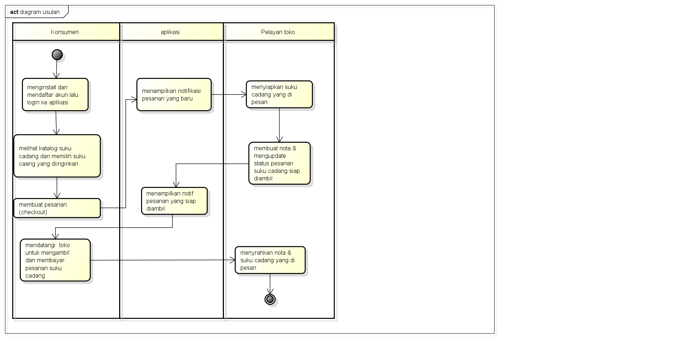

Berisi Saduran Matakuliah Analisis dan Perancangan RPL
Nama : Tekat Tri Wiyono
Nim : 1811500111
Kelompok : TI6J
Matkul : Analisis dan Perancangan PL
Berikut adalah saduran materi saya pada pertemuan ke-3
1.dosen mengingatkan kembali untuk selalu cerdas dan berjiwa luhur
2.dan juga bahwa dalam makul ini terbagi 3 platform yaitu classroom,youtubu,dan,telegram
3.dosen mengingatkan seperti pada pertemuan sebelumnya bahwa Untuk tugas mahasiswa harus menyimpulkan materi yg di sampaikan
4.membahas dan menganalisa studi kasus sistem usulan dan membuatnya menjadi Aktivity diagram
5.aktivity diagram digunakan untuk menggambar proses bisnis,bukan detail suatu halaman,untuk menggambar detail halaman menggunakan sequence diagram
6.aktivity diagram harus sejalan dengan proses bisnis
7.membahas sistem usulan,sistem usulan itu harus memberi manfaat bagi stakeholder(pelayan toko dan konsumen)manfaat ini biasanya untuk memudahkan proses bisnis
8.membuat diagram aktiviti Usulan di astah
untuk hasil latihan file project Astah silahkan Klik->> Download
dibawah ini adalah contoh hasil gambar Aktivity Diagram:
